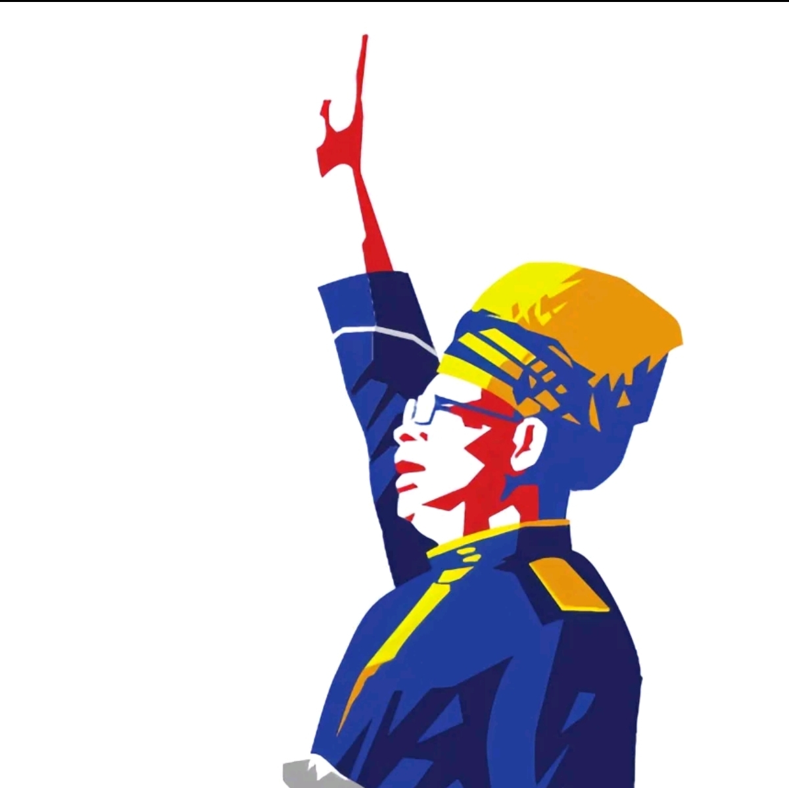

Bab 2: Kebangkitan Nasionalisme

| BAHAGIAN A · Soalan Struktur | BAHAGIAN B · Soalan Esei | |
|---|---|---|
| Bilangan soalan | 4 soalan, semua wajib | 5 soalan, pilih 3 |
| Markah | 10 markah setiap soalan (40) | 20 markah setiap soalan (60) |
| Tempat menjawab | Ruang yang disediakan dalam kertas soalan | Kertas jawapan berasingan |
| Gaya jawapan | Ringkas & padat: 1 isi = 1 ayat lengkap | Perenggan: isi + huraian + contoh, ayat lengkap |
SUMBER Analisis pemarkahan SPM 2024 & kertas percubaan negeri. Semak spesifikasi terkini Lembaga Peperiksaan.
KBAT = Kemahiran Berfikir Aras Tinggi. Soalan KBAT bukan sekadar menguji hafalan. Ia meminta anda:
Mengaplikasi ➜ Menganalisis ➜ Menilai ➜ Mencipta
Berita baiknya: jawapan tetap dibina daripada fakta yang anda sudah tahu + cara berfikir.
Gariskan kata tanya dan kata kunci. Kata tanya memberitahu apa yang pemeriksa mahu.
| Kata tanya | Apa yang diminta | Cara memulakan jawapan |
|---|---|---|
| Mengapakah…? | SEBAB | "…kerana…" / "Hal ini kerana…" |
| Bagaimanakah…? | CARA / PROSES | "…dengan cara…" / "…melalui…" |
| Pada pendapat anda…? | PANDANGAN + ALASAN | "Pada pendapat saya, … kerana …" |
| Sebagai pelajar / rakyat Malaysia…? | TINDAKAN DIRI | "Saya akan…" (tindakan realistik) |
| Nyatakan (esei) | ISI TEPAT | Ayat lengkap yang ringkas |
| Huraikan (esei) | ISI + HURAIAN | Isi, diikuti penerangan/contoh |
| Apakah perbezaan…? | DUA PIHAK | "…X…, manakala Y…" |
PETUA GURU I-H-C ialah teknik pengajaran, bukan istilah rasmi skema. Untuk Bahagian A yang ringkas, selalunya cukup dengan Isi (+ contoh jika perlu). Untuk esei, gunakan I-H-C penuh.
1. Ringkas & padat. Satu isi dalam satu ayat lengkap, di ruang yang disediakan. Tiada pendahuluan atau kesimpulan.
2. Markah & ruang = petunjuk. 2 markah ➜ 2 isi; 4 markah ➜ 4 isi.
3. Soalan sumber. Baca sumber dahulu ➜ garis maklumat penting ➜ gabung dengan fakta Bab 2. Jangan salin sumber bulat-bulat.
Pada pendapat anda, mengapakah kita perlu meneladani perjuangan pemimpin terdahulu?
Kata kunci: pada pendapat anda = pandangan saya · mengapakah = sebab · meneladani = mencontohi
Contoh jawapan (4 isi):
Akhbar dan majalah seperti Jawi Peranakan, Al-Imam dan Fajar Sarawak menjadi saluran penting kepada golongan nasionalis.
Berdasarkan petikan, bagaimanakah akhbar dan majalah membangkitkan semangat nasionalisme?
Kata kunci: bagaimanakah = CARA · gabungkan petikan + fakta Bab 2.
Perhatikan: setiap isi = CARA + CONTOH daripada petikan.
Apakah perbezaan cara perjuangan Mahatma Gandhi dengan Bal Gangadhar Tilak?
"Mahatma Gandhi berpegang kepada satyagraha, iaitu berpegang teguh kepada kebenaran, manakala Bal Gangadhar Tilak menggerakkan penentangan secara militan terhadap British."
⚠️ Jika anda menyebut satu pihak sahaja, perbandingan itu tidak lengkap.
Sebagai pelajar, bagaimanakah anda boleh memanfaatkan media massa untuk mengekalkan kedaulatan negara?
Teknik: mulakan setiap isi dengan "Saya akan…" dan pastikan tindakan itu realistik untuk pelajar.
| A · STRUKTUR | B · ESEI | |
|---|---|---|
| Bentuk | Ayat ringkas, 1 isi = 1 ayat | Perenggan, 1 perenggan = 1 isi |
| Kandungan isi | Isi tepat (+ contoh jika perlu) | Isi + huraian + contoh (I-H-C) |
| Pendahuluan / kesimpulan | Tidak perlu | Tiada pendahuluan panjang; kesimpulan ringkas bila perlu |
| Larangan | Jawapan satu perkataan | Jangan tulis dalam bentuk poin atau jadual |
| Bahagian A | Esei 1 | Esei 2 | Esei 3 | Semak | Jumlah |
|---|---|---|---|---|---|
| ± 45 min | ± 30 min | ± 30 min | ± 30 min | ± 15 min | 2 jam 30 min |
Untuk setiap esei: ± 1 minit membaca & membuat rangka, kemudian menulis.
(a) Nyatakan faktor kemunculan gerakan nasionalisme di negara kita. 4
(b) Huraikan perjuangan golongan intelektual berpendidikan agama. 8
(c) Pada pendapat anda, mengapakah golongan intelektual penting dalam memperjuangkan nasib bangsa? 8 KBAT
Jumlah: 20 markah
Soalan esei biasanya dipecahkan kepada beberapa bahagian; pecahan markah di atas ialah contoh latihan.
IFaktor pertama ialah peranan agama, apabila pelajar yang belajar di Mesir terdedah kepada Gerakan Islah.
IFaktor kedua ialah penulisan kreatif seperti novel, cerpen dan puisi yang membangkitkan semangat rakyat.
IFaktor ketiga ialah media cetak, iaitu akhbar dan majalah yang menyebarkan idea nasionalisme.
IFaktor keempat ialah sistem pendidikan, seperti madrasah, MCKK dan SITC.
Isi lain yang boleh diterima: kemunculan golongan intelektual · pengaruh luar dan serantau.
IGolongan berpendidikan agama seperti Syed Sheikh al-Hadi dan Sheikh Muhammad Tahir Jalaluddin dikenali sebagai Kaum Muda. HMereka memperjuangkan pentafsiran dan pemodenan Islam berpandukan al-Quran dan Hadis.
ISelain itu, Kaum Muda menggalakkan pendidikan wanita. HMereka turut mendirikan madrasah untuk menyebarkan ilmu kepada masyarakat.
IDi samping itu, mereka berjuang melalui akhbar dan majalah. CContohnya, majalah Al-Imam memuatkan idea pembaharuan.
ITambahan pula, pendapat mereka sering bertentangan dengan Kaum Tua. HHal ini mencetuskan polemik Kaum Muda dan Kaum Tua dalam masyarakat.
INGAT Untuk "huraikan", isi sahaja tidak cukup: setiap isi perlu diikuti penerangan atau contoh.
Tulis isi ringkas di tepi kertas:
Rangka ➜ isi tidak berulang, esei tersusun.
Mula: Pada pendapat saya…
Sebab: Hal ini kerana…
Contoh: Contohnya… / Misalnya…
Isi seterusnya: Selain itu… · Di samping itu… · Tambahan pula… · Seterusnya…
Tutup: Kesimpulannya…
IPada pendapat saya, golongan intelektual penting kerana mereka menyedarkan masyarakat tentang nasib bangsa. HHal ini kerana mereka menyebarkan idea pembaharuan kepada rakyat melalui penulisan. CContohnya, Syed Sheikh al-Hadi menyebarkan idea pembaharuan melalui majalah Al-Imam.
ISelain itu, mereka memperjuangkan pendidikan. HIlmu membolehkan rakyat memahami hak mereka dan memajukan diri. CContohnya, Kaum Muda menggalakkan pendidikan wanita dan mendirikan madrasah.
IDi samping itu, mereka menyatukan rakyat melalui persatuan. HPerjuangan yang tersusun lebih kuat berbanding perjuangan secara bersendirian. CContohnya, lepasan SITC seperti Ibrahim Haji Yaacob menubuhkan Kesatuan Melayu Muda (KMM).
ITambahan pula, mereka menyuarakan tuntutan rakyat. HMereka menjadi suara orang Melayu kepada pihak British. CContohnya, Mohd Eunos Abdullah dan Raja Chulan menuntut British memperbaiki taraf hidup orang Melayu.
KKesimpulannya, golongan intelektual ialah penggerak utama nasionalisme kerana mereka menyedarkan, mendidik dan menyatukan rakyat.
PETUA GURU Tulis kesimpulan ringkas terutamanya bagi soalan pendapat atau jika soalan meminta rumusan. Semak skema sekolah anda.
1. Buat rangka dahulu. 2. 1 perenggan = 1 isi. 3. Ayat lengkap, bukan poin/jadual.
4. Guna penanda wacana. 5. Pendapat yang munasabah + disokong fakta Bab 2. Tiada satu jawapan tunggal, asalkan relevan dan berasas.
1. Sebagai pelajar, bagaimanakah anda boleh meneladani semangat golongan intelektual dalam perjuangan nasionalisme? 4
Panduan isi (cadangan): rajin menuntut ilmu · banyak membaca & menulis untuk berkongsi idea bernas · aktif dalam persatuan sekolah · menggunakan media secara bijak untuk menyebarkan maklumat yang benar.
2. Pada pendapat anda, mengapakah persatuan seperti KMS, PASPAM dan KMM penting dalam perkembangan nasionalisme? 4
Panduan isi (cadangan): menyatukan orang Melayu · menjadi wadah bertukar-tukar pendapat · memperjuangkan kepentingan Melayu dalam politik & pendidikan · menyuarakan penentangan terhadap British.
Tulis jawapan anda menggunakan I-H-C, kemudian semak dengan guru. Kongsi jawapan anda di ruang komen video Titik Sejarah!